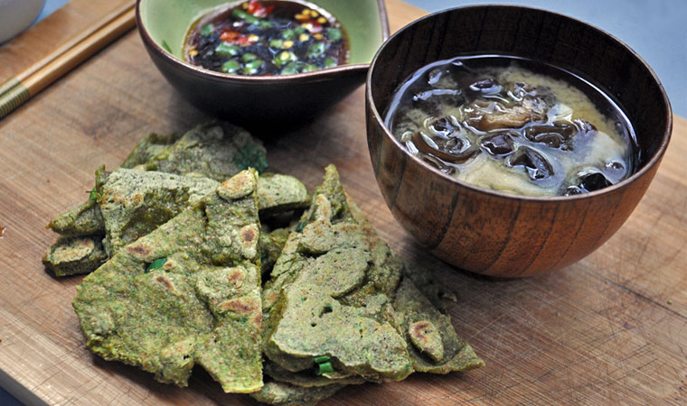

spinach pajeon
1 pancake — 15 minutes
A dish of korean inspiration! A delicious scallion pancake coloured green with spinach. This is a great way to add an extra portion of vegetables to your meal.
 spinach1/2 cup
spinach1/2 cup water1/2 cup
water1/2 cup spelt flour1/2 cup
spelt flour1/2 cup sesame oil2 tsp
sesame oil2 tsp scallions1 bunch
scallions1 bunch
pancake
- Blend 1/2 cup of spinach with 1/2 cup of water until smooth. Set aside.
- In a bowl, whisk together 1/2 cup of spelt flour, 1 tsp sesame oil and the blended spinach.
- Heat a large pan with 1 tsp of sesame oil over medium heat.
- Put the chopped scallions in the pan and pour the batter onto it. With a spatula, press down on the pancake to flatten it out.
- Cook for 3-4 minutes until the sides come off the pan and the bottom is cooked. Flip, cook for a a few extra minutes and transfer to a plate.
- Cut it into pieces to make it easier to dip into the sauce!
 soy sauce2 tbsp
soy sauce2 tbsp japanese rice vinegar1 tbsp
japanese rice vinegar1 tbsp chili pepper flakes1 tsp
chili pepper flakes1 tsp black sesame seeds1 tsp
black sesame seeds1 tsp maple syrup1 tsp
maple syrup1 tsp garlic1 clove
garlic1 clove
dipping sauce
- Put the sauce ingredients together in a bowl and mix!